Hoy 8 de julio cumple años la futura doctora más hermosa del mundo 🌷✨ y yo tengo la suerte de poder ser parte de su historia ❤️
Haz clic aquí mi princesa ✨Dale click a la foto, mi princesa ❤️
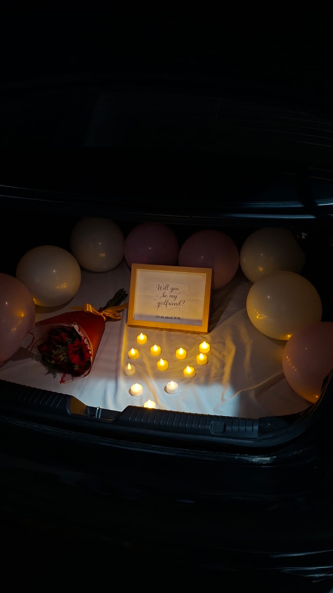
Ese 4 de abril comenzó el capítulo más bonito de mi vida, te amo mi terremotito.
Días
Horas
Minutos
Segundos
Dale click a cada una de las fotos, mi princesa ❤️
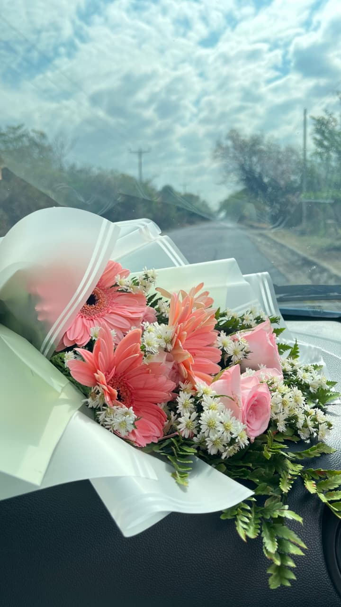
Recuerdo el día que nos vimos por primera vez en persona, tú estabas nerviosa pensando que quizá no me gustarías, pero al verte me di cuenta de lo contrario: eras mucho más preciosa en persona 🌷 te dejé las flores en el asiento del carro y te pedí que no abrieras la puerta porque “no funcionaba”, pero en realidad era solo una excusa para poder abrirte yo y sorprenderte ❤️. (09 de marzo 2026)
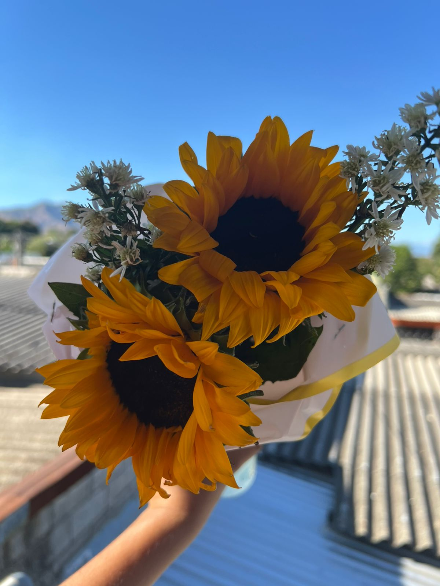
Recuerdo que no lo esperabas, porque nos vimos un día después del Día de las Flores Amarillas 🌼 y el vigilante del centro comercial se nos quedó viendo cuando gritaste emocionada 😅 verte así de feliz y saber que te sentiste amada es lo mejor del mundo ❤️. (22 de marzo 2026)
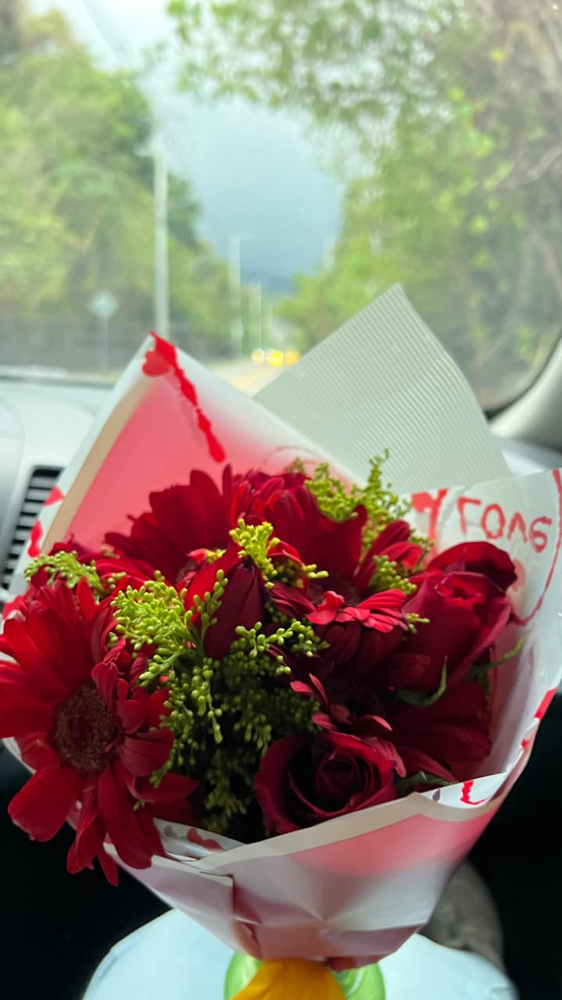
Recuerdo ese día cuando te pedí que fueras mi novia ❤️ te dije que íbamos a Multiplaza a desayunar, y te pusiste triste porque un día antes te había prometido cocinarte el desayuno… pero en realidad era una excusa✨ y luego por la tarde fuimos al Boquerón 🌋, aunque llegamos al parqueo nada mas porque estaba lloviendo 🌧️ (04 de abril 2026)
Dale click a cada una de las fotos, mi princesa ❤️
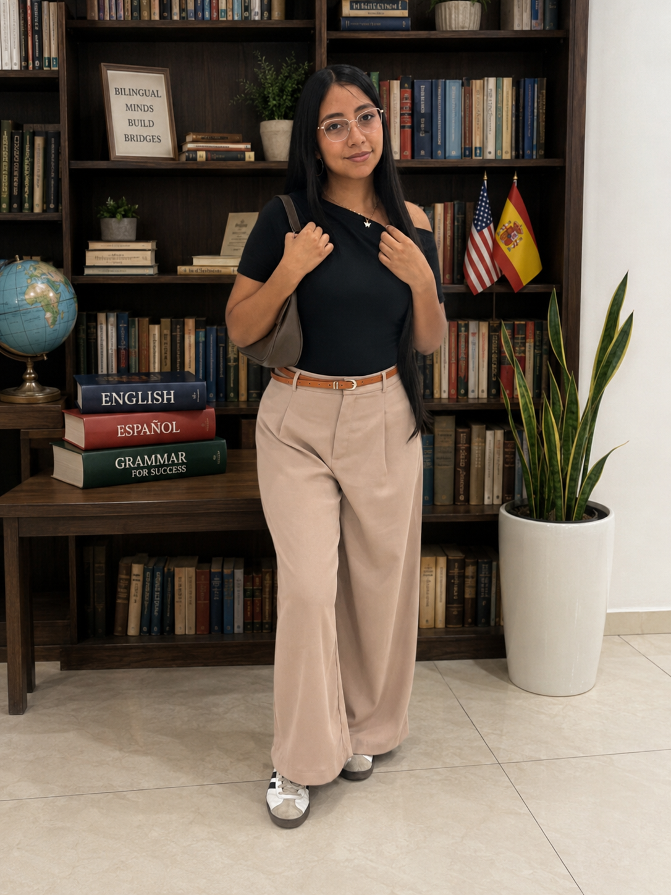
🌍Admiro tu inteligencia y dedicación. Despertar todos los días a las 6:00 a.m. para asistir a clases demuestra lo comprometida que eres con tu futuro. Me encanta verte esforzarte por tus metas, porque sé todo lo que eres capaz de lograr cuando te propones algo. 🌍❤️
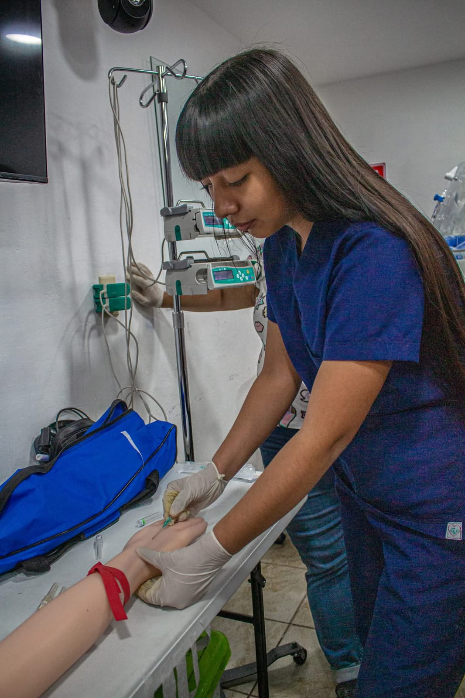
🚑Gracias por cuidar a los demás con un corazón tan bonito.Eres una de las mejores personas que he conocido. Tu vocación de ayudar a quienes más lo necesitan habla de la enorme calidad humana que tienes. Aunque no estuve presente durante esa etapa de tu vida, no me entristece, porque tendré la fortuna de acompañarte durante todo lo que está por venir. ❤️🚑
Convertirte en doctora es una meta que siempre he admirado de ti. Desde que te conozco he visto tu esfuerzo, tu disciplina y tu pasión por lo que haces. Estoy completamente seguro de que lo lograrás. Y cuando llegue ese día, sé que tú serás una de las personas más felices del mundo... y yo seré el novio más orgulloso de todos. ❤️🩺🌷
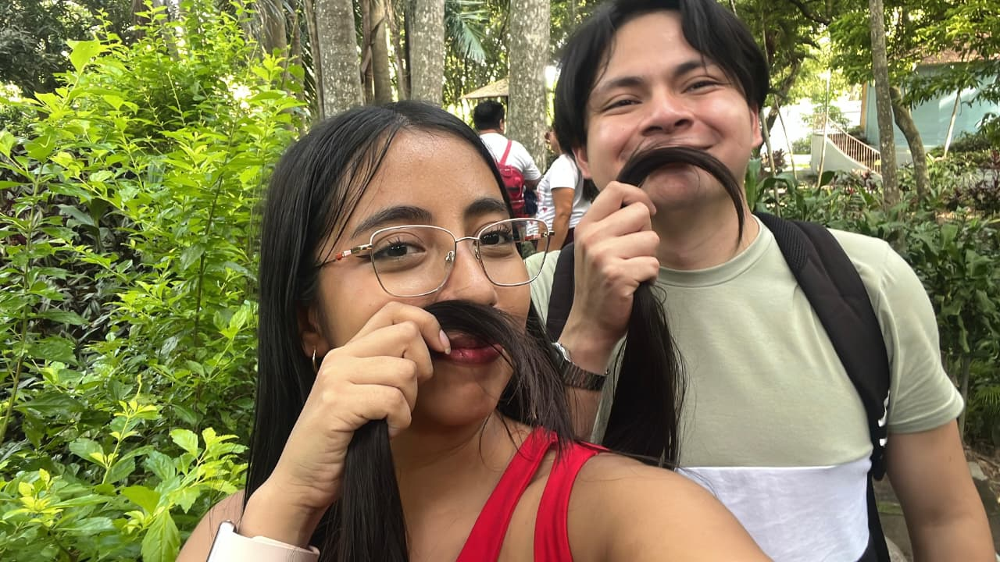
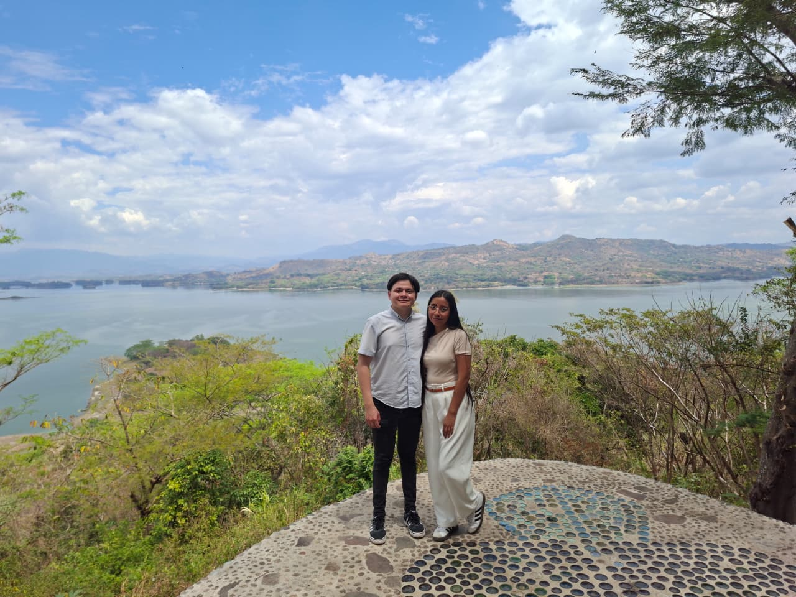
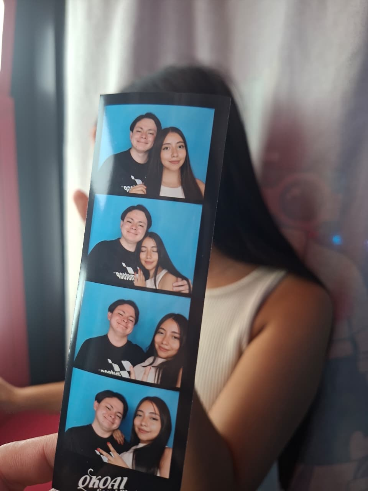
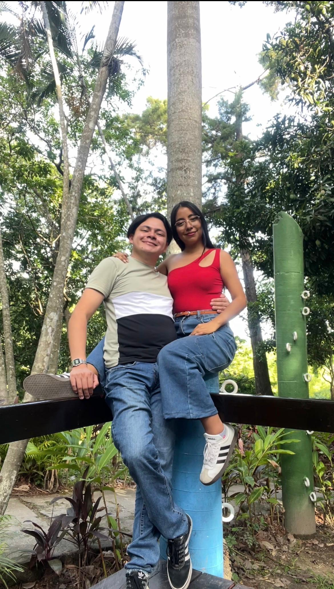
Esta carta se desbloqueará el 4 de abril de 2027 a las 9:10 a.m.
Aún no es 4 de abril de 2027, mi terremotito 🌷 un poquito más de paciencia ❤️
Mi amor, si estás leyendo esto, significa que llegamos a nuestro primer año juntos.
Estoy escribiendo esta carta hoy, 05 de julio de 2026, sin poder imaginar todavía todos esos momentos lindos que nos faltan por vivir en este año que está por venir.
Quiero que sepas que cada día de este tiempo, aunque a veces la distancia pesara, mi amor por ti solo creció. Te vi esforzarte, madrugar, estudiar y no hubo un solo momento en que no me sintiera orgulloso de ser parte de tu vida.
Hoy, un año después, quiero decirte que esto apenas comienza: nos faltan aproximadamente 70 años juntos. Falta verte graduarte, falta el día en que no estemos tan lejos, falta construir la vida que tantas veces imaginamos juntos.
Quiero que sepas que no existe nadie más que te iguale o te reemplace.
Lo mejor de todo es que te di de regalo este sitio en tu cumpleaños de 2026, y te emocionaste tanto que eso valió completamente la pena. Y ahora te emocionarás de nuevo al leer esta carta meses después... es como si la sorpresa hubiera durado todo este tiempo.
Gracias por un año a tu lado, mi princesa. Que sea el primero de muchísimos más ❤️
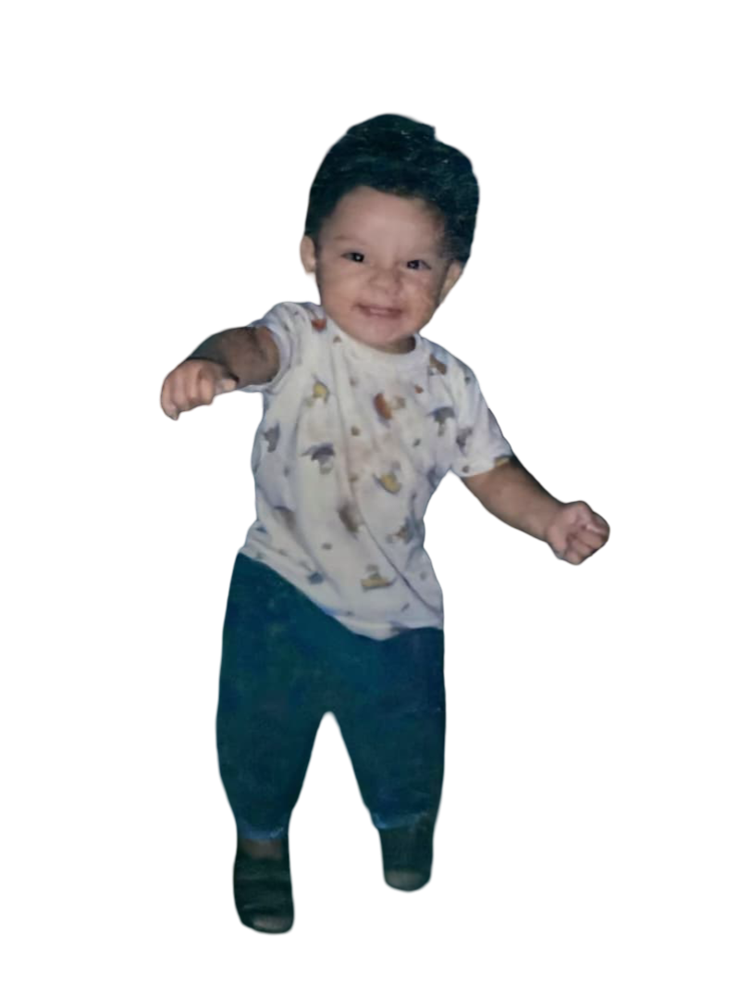
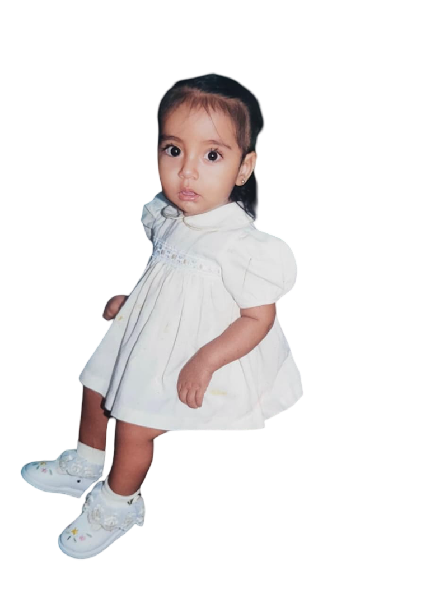
Dicen que un hilo rojo invisible conecta a las almas destinadas a encontrarse, sin importar el tiempo, la distancia o el camino que deban recorrer.
No sé en qué momento el destino ató el nuestro, pero hoy entiendo que cada paso que di, sin saberlo, me estaba llevando hacia ti ❤️